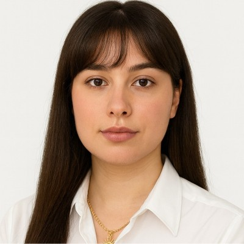

Étudiante en Génie Électrique et Informatique Industrielle
Recherche stage 8–12 semaines | Disponible dès avril 2025
À Propos

Étudiante en BUT Génie Électrique et Informatique Industrielle à l'Université Sorbonne Paris Nord, je me spécialise dans la conception de systèmes électroniques, l'automatisation et la programmation embarquée.
Curieuse, rigoureuse et motivée, je recherche un stage de 8 à 12 semaines à partir d'avril 2025 afin de mettre en pratique mes compétences en développement électronique et informatique industrielle au sein d'une équipe technique.
Qui suis-je professionnellement ?
Satisfaction générale
Je me sens satisfaite de mon évolution personnelle et des compétences que j’ai acquises au fil du temps, aussi bien dans les domaines techniques que dans le développement personnel. En dehors de mes études, la pratique régulière de la musculation m’aide à renforcer ma discipline, ma constance et mon sens de l’effort.
Compétences clés
- Programmation : connaissances de base en langage C, C++ et en Python
- Compétences linguistiques : bilingue en arabe, à l’oral comme à l’écrit
- Formation académique : baccalauréat avec spécialités en mathématiques et en physique
Expériences passées
Pilotage d’avion : expérience de 2 heures de vol, acquisition des notions fondamentales du pilotage, de l’utilisation des instruments de bord et des règles de sécurité. Stage réalisé grâce à l’obtention du BIA (Brevet d’Initiation à l’Aéronautique).
Objectifs professionnels
- Objectif à long terme : devenir ingénieure en électronique et intégrer une entreprise innovante .
- Objectif à court terme : valider mon BUT GEII en développant des compétences solides en électronique et en programmation
Formation
BUT Génie Électrique et Informatique Industrielle | 2024 - 2027
Université Sorbonne Paris Nord
Baccalauréat Scientifique | 2024
Lycée Jean Zay, Aulnay-sous-Bois
Brevet d'Initiation Aéronautique (BIA) | 2021
Mention Bien – Ministère de l'Éducation nationale
Projets techniques
Prototype d'alarme | VHDL, Quartus II
Conception et développement de prototypes d'alarme en langage de description matérielle VHDL, de la spécification au test sur environnement de simulation.
Véhicule autonome télécommandé
Construction d'une voiture robotisée commandée à distance : intégration des systèmes électroniques, mécaniques et de la communication sans fil pour le pilotage et la gestion des mouvements.
Alimentation pour vélo électrique
Réalisation d'un système d'alimentation pour vélo électrique, comprenant l'étude des besoins énergétiques et l'intégration des composants de puissance.
Analyseur de gisement solaire (AGS)
Développement d'un système d'analyse et de mesure du potentiel solaire afin d'optimiser le rendement photovoltaïque : acquisition, traitement et exploitation des données.
Analyse de robot aspirateur (Roomba)
Étude des composants et du fonctionnement d'un robot aspirateur : architecture, capteurs, stratégie de déplacement et logique de contrôle.
Système IoT sécurisé de mesure de température | ESP32, MQTT
Conception d’un système de mesure de température avec sonde PT100 connectée à un ESP32. Conditionnement analogique du signal avec AOP OP07. Transmission des données via MQTT et sécurisation des communications avec TLS et mTLS.
Compétences
- Langages de programmation : Python, C, VHDL, Assembleur
- Logiciels & Outils : Quartus II, MPLAB X, PSIM, Pack Office
- Langues : Français, Anglais, Arabe
Centres d'intérêt
- Théâtre
- Plongée libre
- Voyages